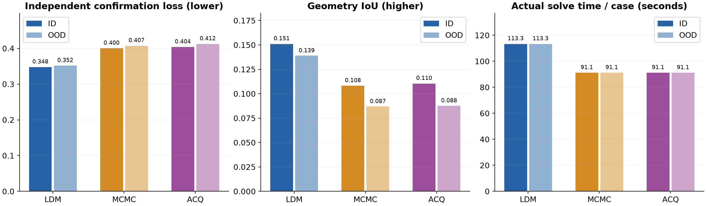
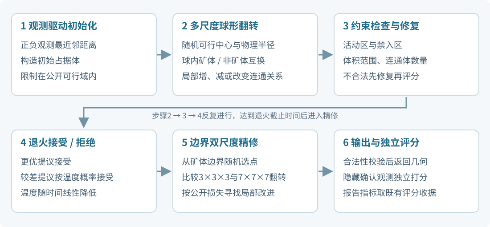
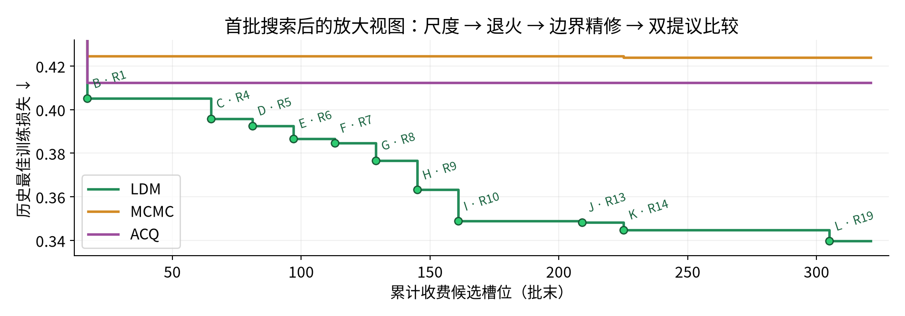
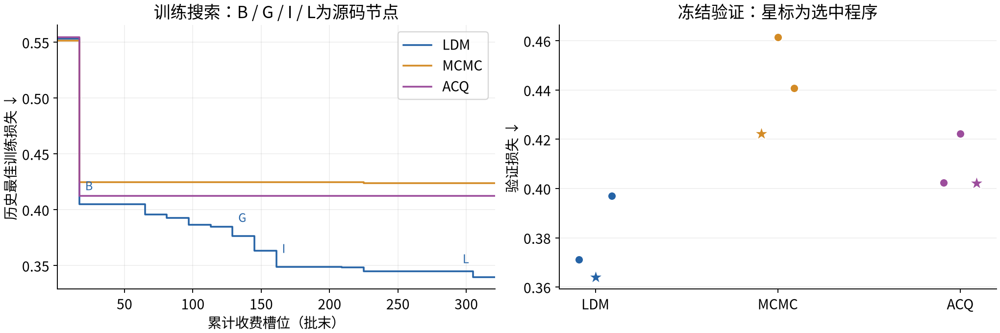
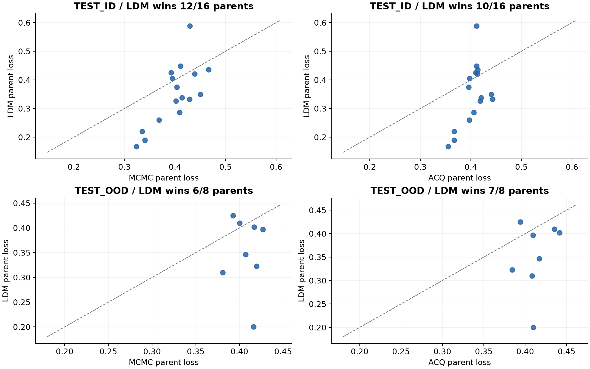
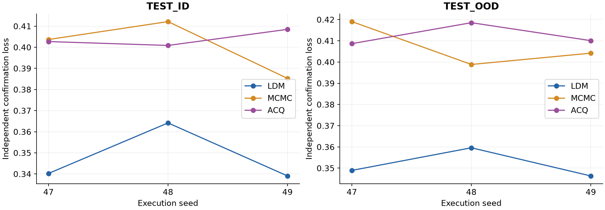
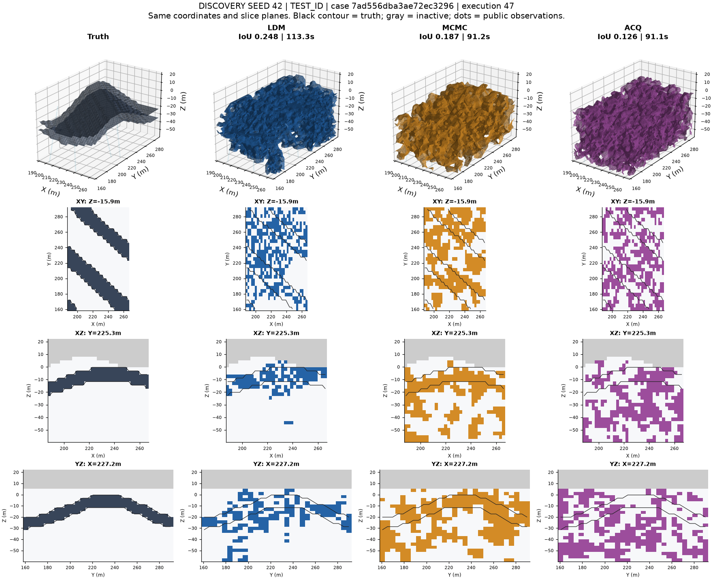
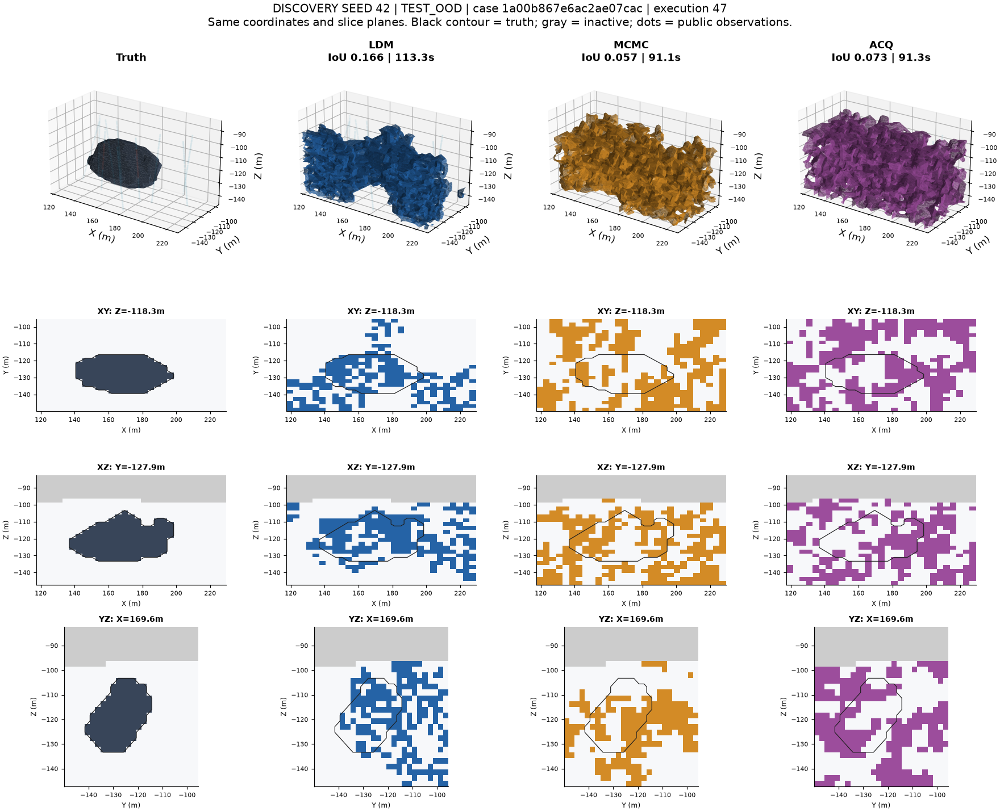
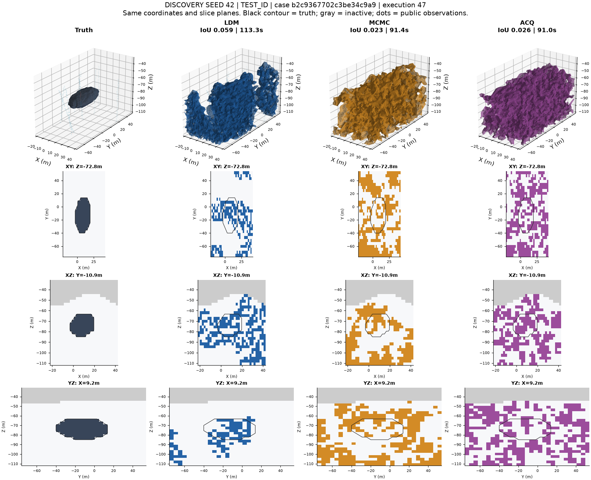
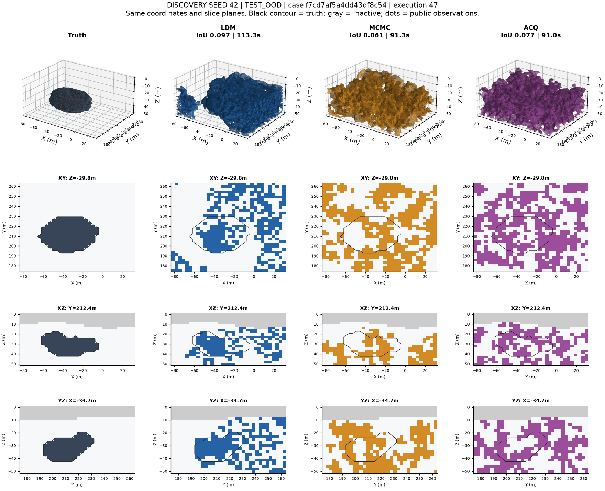

铜矿三维反演 | LDM 种子42结果报告EXECUTIVE RESULTS
01 / 摘要与效果报告
让自动算法研究
转化为更好的三维反演结果
在本次铜矿合成基准中，LDM的独立测量损失低于修复后的MCMC与ACQ，ID与OOD测试均获得改善。
13.1–14.7%独立测量损失相对降低
覆盖ID/OOD及两种对照
36.7–59.7%几何IoU相对提升
对应绝对提升0.041–0.052
+22.2秒每案例实际求解时间
约113.3秒 vs 91.1秒

实色为ID，浅色为OOD。损失与IoU按地质母体等权聚合；时间为实际求解墙钟秒。核心结果：种子42的LDM固定赢家在两类测试分布上均实现更低测量损失和更高几何重叠率，实际单案例求解时间增加约24.4%。
范围：发现种子42；48个测试案例，每案例执行47/48/49，三种方法合计432次测试求解，全部成功。数据为已完成实验的冻结结果。
THE PROBLEM
02 / 问题介绍
将稀疏钻孔与露头观测，转化为可分析、可对照的三维矿体几何。
铜矿反演需要在有限观测下估计矿体的空间范围、边界和连通关系。相同观测可能对应多种几何解释，因此算法既要拟合可见观测，也要满足公开的地质约束。
01 观测输入钻孔和露头观测点及其标签
02 空间约束活动区、禁入区、体积与连通体约束
03 三维反演在约束内搜索矿体形状与边界
04 独立评估用确认观测与真值几何检验输出
这份实验回答什么问题
在相同的候选反馈额度与单次求解资源上限下，自动研究算法的LDM，能否比固定形式的随机搜索与采集引导搜索，得到更好的可迁移求解器？
主指标：独立测量损失
使用未交给求解器的确认观测检验预测。先将每次确认损失转换为效用，再按地质母体等权聚合；最终损失越低越好。
几何指标：IoU
比较预测矿体与真值矿体的体积重叠。IoU越高，空间范围越接近真值；这是辅助诊断指标。
主指标聚合：Loss = 1 − 地质母体均值［执行与观测均值［1 / (1 + 确认损失)］］。图表中的损失百分比表示该聚合指标的相对降低。
展示材料中的三维图
每组图始终同时展示真值、LDM、MCMC和ACQ，采用相同坐标范围和切片位置；灰色为非活动区，黑线为真值轮廓，彩点为公开观测。
THREE APPROACHES
03 / 方法介绍
三种方法围绕同一反演问题展开，区别在于如何提出和选择下一步搜索方案。
LDM：自动研究与改进求解算法
研究阶段生成并修改完整Python求解程序，通过多分支候选生成、融合选择与迭代反馈改进算法。20轮研究，每轮选择16个候选，加初始化，共321个收费反馈槽位。种子42最终选出“多尺度球形翻转退火＋边界局部精修”；程序独立运行，每个案例内不再调用大模型。
MCMC：投影随机优化基线
外层按预设Sobol序列扫描超参数。每次求解通过随机场与形状扰动提出新状态，按目标函数与温度接受或拒绝，再将状态投影到公开的硬约束可行域，保留最优合法几何。
ACQ：采集函数引导的随机优化
外层同样采用预设Sobol超参序列。每次求解在投影随机搜索中引入在线贝叶斯岭回归代理模型。利用候选特征与采集分数，从候选提议中选择下一次真实评分方向。
统一的训练与评估路径
训练搜索48案例
最多321收费候选
候选冻结各方法固定3份训练候选
验证选型16案例
执行种子47
固定测试ID32 + OOD16
执行47/48/49
| 实验项 | 设置 |
|---|
| 发现种子 | 仅42 |
| 单次求解上限 | 120秒 / 2 CPU / 4 GiB |
| 反馈计费 | 接口拒绝与失败占用额度，不补评 |
| LDM结果来源 | 已冻结原实验赢家与既有收据 |
| 对照结果来源 | 修复后的MCMC / ACQ基线 |
| 选型规则 | 验证损失优先，依次比较合法率、耗时及源码标识 |
THE DISCOVERED SOLVER
03 / LDM具体设计了什么算法
LDM交付的是一份可直接执行的三维几何搜索程序：多尺度球形翻转退火＋边界局部精修。
这个名称是对冻结源码实际执行路径的概括。LDM的产出是搜索算子、接受规则、可行域处理与时间分配的程序组合；最终求解器使用NumPy / SciPy计算，每个案例内不再调用大模型。

流程依据最终赢家源码逐函数整理；精修的内部记录问题见第6页源码复核。
一次120秒额度怎样分配
初始化＋退火：至69.6秒边界精修：至112.8秒余量
名义截止点：120×0.58与120×0.94；初始化计入前段。检查发生在循环边界，实际求解收据约113.3秒，不能把这些比例当成逐阶段实测耗时。
外层：研究算法
依据训练反馈修改Python程序，产生不同搜索结构和参数组合；验证阶段从3份冻结候选中选择最终程序。
内层：反演一个案例
最终程序读入观测与公开约束，反复改变三维占据体并评分，在固定时间内返回一个合法几何。
OPERATORS & IMPLEMENTATION
03 / 最终赢家：算子、参数与伪代码
算法直接优化矿体占据体 M = [f > 0]。评分前将几何转成规范距离场，使用公开观测损失；隐藏真值和确认观测只用于外部评估。
最终赢家的有效参数
| 环节 | 源码中的实际设置 | 作用 |
|---|
| 初始化 | 公开正负观测最近邻；通常 d+ < d− | 从观测构造初始矿体 |
| 球形翻转 | 尺度集合0.05 / 0.075 / 0.105 / 0.13 / 0.17 | 覆盖多种空间尺度 |
| 物理半径 | r = max(最小体素边长, D × 尺度 × U[0.35,1)) | D为计算域物理对角线 |
| 退火温度 | T0 = 0.00003，按退火阶段时间线性降温 | 允许少量非改进移动 |
| 约束修复 | 优先保留大连通体，按观测距离排序增减体素 | 满足活动区、体积和连通性约束 |
| 边界精修 | 随机边界点；立方邻域半径1与3 | 比较局部3³ / 7³体素翻转 |
| 随机数 | default_rng(执行种子 + 41) | 内部偏移41与发现种子42不同 |
退火接受规则：公开损失降低则接受；否则以 exp((当前损失 − 新损失) / T(t)) 的概率接受。新状态不合法时，退火阶段先修复再评分；精修阶段跳过不合法提议。
可复核的流程伪代码
输入：公开观测、网格与约束；时间额度120秒；执行种子
1 用共享观测初始化器构造合法矿体，计算公开损失
2 至总计69.6秒：
随机选可行中心、尺度和抖动半径，翻转球内体素符号
评分；若不合法，修复活动区 / 连通体 / 体积后重评
按改进或退火概率接受，更新搜索状态与退火最优记录
3 用退火阶段最优状态进入冻结的 best_pair 边界精修
至总计112.8秒，比较边界点周围两种立方翻转
4 对精修输出做合法性校验；必要时回退至退火状态或初始化
5 返回几何，由独立评分器产生报告所用指标
本赢家启用 sphere / anneal / best_pair；源码中的RBF、循环重启、算子组合搜索、薄片和拓扑专用分支未启用，因此没有将它们列为本次实际算法。best_pair的记录细节见下一页。
SELECTED WINNER & SOURCE EVIDENCE
03 / 哪个候选是“最好算法”
报告中的“最好算法”，指按既定验证规则选中的种子42最终赢家。训练分数最高的候选也单独保留，两者没有混用。
| 比较项 | 训练最佳候选 | 验证选中／正式测试赢家 |
|---|
| 源码摘要前缀 | 776ee0300e97 | 2d2c33ed6a58 |
| 训练损失↓ | 0.339720 | 0.343746 |
| 验证损失↓ | 0.371223 | 0.364064 |
| 验证IoU↑ | 0.128043 | 0.127397 |
| 退火截止比例 | 0.56（67.2秒） | 0.58（69.6秒） |
| 随机种子偏移 | 31 | 41 |
| 用途 | 训练搜索最佳记录 | 本报告全部LDM测试与案例图 |
两份程序的函数体经AST核对相同，仅上述退火截止比例和随机偏移不同。最终赢家训练损失略高，但验证损失更低，因此按验证规则选中；验证实际执行种子为47，保留已接受的现有选型。
这份程序已经交付的效果
固定赢家在ID / OOD上的损失为0.3478 / 0.3516；相对修复后的MCMC与ACQ降低13.1%–14.7%。它以约22.2秒的额外实际求解时间，取得本次完整程序比较中的几何与观测拟合改善。各组件的单独贡献未作消融测量，不能将全部提升归于某一个算子。
源码复核记录：冻结赢家第321行在 best_pair 精修中将最后一个提议 prop 存入 best，却将选中提议 chosen 的分数记入 best_l。当半径1的提议胜过半径3时，可能出现模型与内部记录分数错配；隔离的单轮单元探针已复现（示例记录0.4、返回模型的桩评分0.8）。这不是正式案例的实测差值。
原程序和当前赢家保持冻结；本次没有补评、修复后重跑或重选。报告数值继续取独立评分器对实际返回模型的既有收据。
查看源码、参数和复核证据。
最终赢家 SHA256：2d2c33ed6a588d9e444a104d135c8d358ca715e6cf061130a92bf5fd0d1c9d0b
训练最佳 SHA256：776ee0300e9757563c2d5e1b087c3499f111b2bfd9b7dfa979c35f3c8cc979fd
ALGORITHM COMPARISON
03 / 三种算法逐项比较
三种方法优化同一公开观测目标；区别在于研究阶段改变什么，以及求解阶段怎样改变三维几何。
| 比较维度 | LDM最终赢家 | 修复后MCMC | 修复后ACQ |
|---|
| 外层研究 | 生成／改写完整Python算法 | 固定算法，Sobol扫描参数 | 固定算法，Sobol扫描参数 |
| 选中程序的起点 | 公开正负观测最近邻初始化 | 投影后的随机场初始化 | 投影后的随机场初始化 |
| 搜索状态 | 以符号表示矿体占据体 | 保留亚体素界面的连续距离场 | 与MCMC相同 |
| 几何提议 | 多尺度球内符号翻转 | 高斯随机场速度＋界面传播 | 同类随机场提议，每轮最多4个 |
| 提议选择 | 逐个公开评分；精修比较两邻域 | 每轮1个提议直接评分 | 代理预测均值／不确定性，选1个评分 |
| 接受准则 | 损失差＋随时间降低的温度 | 平方损失差／固定温度 | 与MCMC相同 |
| 公开硬约束 | 非法球形提议修复后再评 | 投影后保留连续场与符号 | 与MCMC相同 |
| 边界专用精修 | 有：3³与7³立方翻转 | 无独立精修阶段 | 无独立精修阶段 |
| 本次实际测试秒 | 约113.3秒／案例 | 约91.1秒／案例 | 约91.1秒／案例 |
LDM改变算法本身
从只返回初始化，发展出球形搜索、多尺度选择、低温退火、快速合法评分和边界精修。最终交付可独立运行的求解程序。
MCMC提供随机场几何搜索对照
在固定程序内调整温度、步长、相关尺度与初始化方式。每次通过随机速度场移动界面，公开评分后接受或拒绝。
ACQ在同一随机场搜索上增加提议筛选
用已评分历史拟合在线代理，先筛选更有希望的提议再调用真实目标。这里的采集选择发生在单案例内部；外层仍是预设Sobol调参。
BASELINE MECHANICS
03 / MCMC与ACQ：提议、接受与参数
修复后MCMC：随机场提议与固定温度接受
随机速度场经快速行进法扩展到界面附近，再按物理步长移动距离场；投影到公开硬约束可行域，保留亚体素变化。真实评分后更新当前状态，并单独保存最低公开损失的几何。
φ′ = φ − U(0, step_cells) × 最小体素边长 × 扩展速度 / 最大绝对速度
接受概率 = min(1, exp((当前公开损失² − 新公开损失²) / temperature))
ACQ：代理辅助的提议挑选
先积累4个已评分提议作为暖启动；之后每轮最多生成4个合法提议。在线贝叶斯岭回归拟合 log(1＋公开损失)，输入包括随机场参数、体积分数、质心、空间展布、表面与场值统计及其平方项。代理只决定下一次评哪个提议，实际接受与最佳状态仍依据真实公开评分。
选择提议 j* = argmin［预测均值 μⱼ − β × 预测标准差 σⱼ］
选中1个提议 → 真实评分 → 更新代理 → 按与MCMC相同的规则接受／拒绝
本次验证选中的实际参数
| 参数 | MCMC赢家 | ACQ赢家 |
|---|
| temperature | 4.874215 | 4.874215 |
| step_cells | 3.927916 | 3.927916 |
| range_scale | 0.158697 | 0.158697 |
| 初始化 | random_field | random_field |
| 实际每轮提议数 | 1 | 暖启动后最多4 |
| 暖启动／β | 采集分支不启用 | 4 ／ 0.620845 |
| 工作截止 | solve入口剩余额度的75% | solve入口剩余额度的75% |
两份基线赢家的函数体经AST核对相同，CONFIG中的method与β决定采集分支差异。保留硬约束投影后的优化程序身份；不将其解释为严格后验采样。
原始冻结源码：MCMC 98a8be6c93a9 · ACQ 4ddf974f0200。完整身份与有效参数见 方法与轨迹数据。
ANNOTATED DISCOVERY TRAJECTORY
04 / LDM改进轨迹：从初始化到精修
参考autoresearch的“淡色候选点＋突出纪录点＋历史最佳阶梯＋改动注释”画法。铜矿实验保留自身批次语义：横坐标仅表示该轮结束时的累计收费槽位。
 308份完整候选全部入图；13次收费接口拒绝没有损失值，不补点。A–L为初始化及11次批末新纪录；蓝色星标是验证选中的最终程序，不是训练最低点。
308份完整候选全部入图；13次收费接口拒绝没有损失值，不补点。A–L为初始化及11次批末新纪录；蓝色星标是验证选中的最终程序，不是训练最低点。
下图仅放大纵轴，展示后续微小提升的真实幅度。字母与下一页源码溯源表一一对应。打开交互轨迹、完整节点说明及源码差异 · 图形参考：karpathy/autoresearch · analysis.ipynb（固定提交228791fb499a）。纪录之间是相邻最佳源码对照，不冒充直接父子关系或单变量消融。
SOURCE-VERIFIED MILESTONES
04 / 节点溯源：早期搜索 A–F
损失为该程序48个训练案例的既有确认评分聚合；“减少”对照上一条纪录程序，秒数为该程序的实际训练求解均值。
| 节点／轮次 | 实际启用的设计变化与源码 | 训练损失↓
较上一纪录 | 实际秒 |
|---|
A · R0
槽位1 | 只返回观测初始化
直接调用共享initialize，不进行迭代搜索。
153f099129 | 0.553368
起点 | 1.0 |
B · R1
槽位17 | 加入球形贪心搜索
在可行域随机选球心，0.075D尺度翻转体素；每次修复约束，仅接受更低公开损失；工作比例0.75。
db7e22d78f | 0.405101
−0.148268 | 91.1 |
C · R4
槽位65 | 省去重复规范化
FAST=True，评分函数已做规范化，删去评分前重复canonicalize；单尺度仍为0.075D，工作比例0.68。
f9663a709a | 0.395848
−0.009253 | 83.0 |
D · R5
槽位81 | 从单尺度到三尺度
新增SCALE_MIX=(0.05,0.075,0.105)，每次随机抽取球形翻转尺度。
50f40dac43 | 0.392534
−0.003314 | 83.1 |
E · R6
槽位97 | 增加0.13大尺度
半径集合扩展到0.13D；增加_add/_remove，按排名补足或裁剪体积。
9a8a0e7299 | 0.386694
−0.005840 | 83.1 |
F · R7
槽位113 | 扩大到五种尺度
半径集合再加入0.17D，保持0.68工作比例与贪心接受。
a42ff6ddd6 | 0.384623
−0.002071 | 82.8 |
第一阶段：先建立可持续改进的几何搜索
先把观测初始化变成可迭代的球形贪心搜索，再减少重复评分开销，并逐步扩大尺度集合。球内直接翻转符号会改变实际占据体；约束修复使搜索围绕合法几何继续。
A→B是从“只返回初始化”到“执行搜索”的变化，实际时间也从约1秒增至91秒。C→F阶段约83秒，重点改动为评分路径、尺度集合与体积修复。
SOURCE-VERIFIED MILESTONES
04 / 节点溯源：退火与精修 G–L
损失为该程序48个训练案例的既有确认评分聚合；“减少”对照上一条纪录程序，秒数为该程序的实际训练求解均值。
| 节点／轮次 | 实际启用的设计变化与源码 | 训练损失↓
较上一纪录 | 实际秒 |
|---|
G · R8
槽位129 | 加入低温退火与快速评分
mode=anneal，T0=1e-5；fast_legal/fast_loss启用；先评分合法提议，不合法才修复；偏移43。
c44598f149 | 0.376580
−0.008042 | 83.2 |
H · R9
槽位145 | 调整退火温度与随机流
T0由1e-5改为3e-5，随机偏移43改为11；尺度与工作比例保持不变。
9294c07a1a | 0.363181
−0.013400 | 83.2 |
I · R10
槽位161 | 退火后增加边界精修
实际分支仍为sphere；工作比例0.68→0.94，前0.68退火，余下做边界半径1/2立方翻转。
6963b60f1a | 0.348887
−0.014294 | 114.3 |
J · R13
槽位209 | 重新分配退火与精修
退火比例0.68→0.56，工作截止仍0.94；精修随机半径改为1/2/3。
bc3e11690a | 0.348267
−0.000620 | 113.4 |
K · R14
槽位225 | 精修保留小／大两尺度
精修半径1/2/3→1/3，随机偏移11→31；仍随机选一个邻域评分。
4eec5e5387 | 0.344851
−0.003416 | 113.3 |
L · R19
槽位305 | 改为同点双提议比较
best_pair对同一边界点分别评分半径1和3，再选改进提议；其best模型记录问题已披露。
776ee0300e | 0.339720
−0.005131 | 113.3 |
初始化程序 0.553368 → 训练最佳 0.339720，下降38.61%。这是完整程序的观测轨迹，包含搜索结构、参数、随机流及实际算时共同变化；R10平均实际秒从约83增至114。
R20验证选中程序的训练损失为0.343746、验证损失0.364064；它没有刷新训练纪录，正式测试继续使用该固定赢家。L节点及最终赢家的best_pair记录问题保留第6页披露。
TRAINING & SELECTION
04 / 实验结果：训练与验证
训练图显示批末累计收费槽位对应的最佳训练损失；字母对应前页源码节点；验证对三份冻结候选选型，星标为最终赢家。

左图为外层搜索历史最佳训练损失；基线为预设Sobol调参，不是单次求解收敛曲线。查看改动轨迹与源码 · 基线原分数与内层轨迹。| 方法 | 收费槽位 | 完整训练候选 | 训练最佳损失 | 选中验证损失 | 验证IoU |
|---|
| LDM | 321 | 308 | 0.3397 | 0.3641 | 0.1274 |
| MCMC | 321 | 321 | 0.4239 | 0.4223 | 0.0981 |
| ACQ | 321 | 321 | 0.4123 | 0.4021 | 0.1060 |
LDM种子42得到308份完整训练候选反馈，另外13份为收费接口拒绝；两种基线各321份完整候选反馈。测试使用验证选出的固定赢家。
九份验证候选完整结果
| 方法 | 源码摘要前缀 | 验证损失 | 验证IoU | 状态 |
|---|
| LDM | 776ee0300e97 | 0.3712 | 0.1280 | 已评估 |
| LDM | 2d2c33ed6a58 | 0.3641 | 0.1274 | 选中 |
| LDM | 4eec5e53873b | 0.3970 | 0.1305 | 已评估 |
| MCMC | 98a8be6c93a9 | 0.4223 | 0.0981 | 选中 |
| MCMC | 4e087ec008d9 | 0.4615 | 0.0995 | 已评估 |
| MCMC | 28fb0ce30aad | 0.4409 | 0.1078 | 已评估 |
| ACQ | 29888d2667e6 | 0.4025 | 0.1133 | 已评估 |
| ACQ | ab96e6be719f | 0.4222 | 0.1039 | 已评估 |
| ACQ | 4ddf974f0200 | 0.4021 | 0.1060 | 选中 |
HELD-OUT RESULTS
04 / 实验结果：ID与OOD
| 测试集 | 方法 | 独立测量损失↓ | IoU↑ | 实际秒/案例 |
|---|
| ID | LDM | 0.3478 | 0.1510 | 113.31 |
| ID | MCMC | 0.4004 | 0.1081 | 91.12 |
| ID | ACQ | 0.4040 | 0.1104 | 91.12 |
| OOD | LDM | 0.3516 | 0.1390 | 113.30 |
| OOD | MCMC | 0.4074 | 0.0870 | 91.13 |
| OOD | ACQ | 0.4124 | 0.0877 | 91.10 |
LDM相对MCMC的ID/OOD损失分别降低13.12% / 13.68%；相对ACQ分别降低13.91% / 14.74%。以下逐地质母体配对图覆盖全部测试母体。

每个点为一个地质母体，包含其观测方式和三个执行种子的结果。点在虚线下方表示LDM损失更低。ID：16个地质母体；OOD：8个地质母体。相对MCMC，LDM分别在12/16与6/8个母体上获胜；相对ACQ分别为10/16与7/8。
EXECUTION & COMPUTE
04 / 实验结果：执行与计算量

发现种子始终为42；横轴仅切换实际求解的执行种子47/48/49。| 方法 | ID/47 | ID/48 | ID/49 | OOD/47 | OOD/48 | OOD/49 |
|---|
| LDM | 0.3403 | 0.3642 | 0.3391 | 0.3489 | 0.3596 | 0.3463 |
| MCMC | 0.4037 | 0.4122 | 0.3852 | 0.4191 | 0.3988 | 0.4042 |
| ACQ | 0.4027 | 0.4009 | 0.4085 | 0.4087 | 0.4185 | 0.4101 |
实际计算量
测试时LDM约113.3秒/案例，两种基线约91.1秒/案例，增加约22.2秒或24.4%。资源表为训练期间各任务累加的计数。
| 方法 | 求解墙钟小时Σ | 求解CPU小时Σ | 接口CPU小时Σ | 评分CPU小时Σ |
|---|
| LDM | 371.73 | 368.35 | 0.72 | 1.91 |
| MCMC | 390.12 | 388.29 | 2.23 | 1.36 |
| ACQ | 390.09 | 388.31 | 2.23 | 1.36 |
LDM研究harness累计6.20小时；已记录API输入154,573,269 token（其中缓存输入149,270,269），输出2,286,223 token；3份响应未含usage。累计墙钟秒包含并发，harness、接口和求解可重叠，不相加为项目经过时间。
资料索引
完整测试明细与指标：data/report.json；模型、收据与图像摘要：data/provenance.json；全部48案例及144套几何：browser.html。图示均来自冻结结果。
FULL CASE VISUALIZATION
04 / 完整可视化：ID案例1
案例 7ad556dba3ae72ec3296 · drill · 执行种子47。展示按冻结清单顺序选择每个测试集前两个不同地质母体；全部48案例可在配套浏览器中切换。

| 方法 | 确认观测原始损失↓ | 几何IoU↑ | 实际秒 |
|---|
| LDM | 0.4925 | 0.2483 | 113.29 |
| MCMC | 0.8891 | 0.1870 | 91.24 |
| ACQ | 0.8779 | 0.1264 | 91.11 |
上行：真值与三种方法的三维表面；下三行：XY/XZ/YZ正交切片。采用同一坐标与切片平面，几何未做跨执行平均。黑色轮廓为真值、灰色为非活动区、彩点为公开观测。
FULL CASE VISUALIZATION
04 / 完整可视化：OOD案例1
案例 1a00b867e6ac2ae07cac · drill · 执行种子47。展示按冻结清单顺序选择每个测试集前两个不同地质母体；全部48案例可在配套浏览器中切换。

| 方法 | 确认观测原始损失↓ | 几何IoU↑ | 实际秒 |
|---|
| LDM | 0.3368 | 0.1661 | 113.29 |
| MCMC | 1.2361 | 0.0566 | 91.14 |
| ACQ | 0.7808 | 0.0727 | 91.28 |
上行：真值与三种方法的三维表面；下三行：XY/XZ/YZ正交切片。采用同一坐标与切片平面，几何未做跨执行平均。黑色轮廓为真值、灰色为非活动区、彩点为公开观测。
FULL CASE VISUALIZATION
04 / 完整可视化：ID案例2
案例 b2c9367702c3be34c9a9 · drill · 执行种子47。展示按冻结清单顺序选择每个测试集前两个不同地质母体；全部48案例可在配套浏览器中切换。

| 方法 | 确认观测原始损失↓ | 几何IoU↑ | 实际秒 |
|---|
| LDM | 0.3740 | 0.0587 | 113.30 |
| MCMC | 0.8179 | 0.0225 | 91.37 |
| ACQ | 0.7055 | 0.0255 | 91.03 |
上行：真值与三种方法的三维表面；下三行：XY/XZ/YZ正交切片。采用同一坐标与切片平面，几何未做跨执行平均。黑色轮廓为真值、灰色为非活动区、彩点为公开观测。
FULL CASE VISUALIZATION
04 / 完整可视化：OOD案例2
案例 f7cd7af5a4dd43df8c54 · drill · 执行种子47。展示按冻结清单顺序选择每个测试集前两个不同地质母体；全部48案例可在配套浏览器中切换。

| 方法 | 确认观测原始损失↓ | 几何IoU↑ | 实际秒 |
|---|
| LDM | 0.7045 | 0.0967 | 113.30 |
| MCMC | 0.8838 | 0.0609 | 91.31 |
| ACQ | 0.7775 | 0.0767 | 91.03 |
上行：真值与三种方法的三维表面；下三行：XY/XZ/YZ正交切片。采用同一坐标与切片平面，几何未做跨执行平均。黑色轮廓为真值、灰色为非活动区、彩点为公开观测。